01 FV（ページの入口） 共通部品：/marketing-support・/newbusiness-pmo・/indonesia-offshore で同じ作り（見出し・図・写真だけ出し分け）
1 宇宙色の地。星が流れ、英語の最後の語から波紋（トップのFVと同じ文法）参考：Raycast Teams のFV
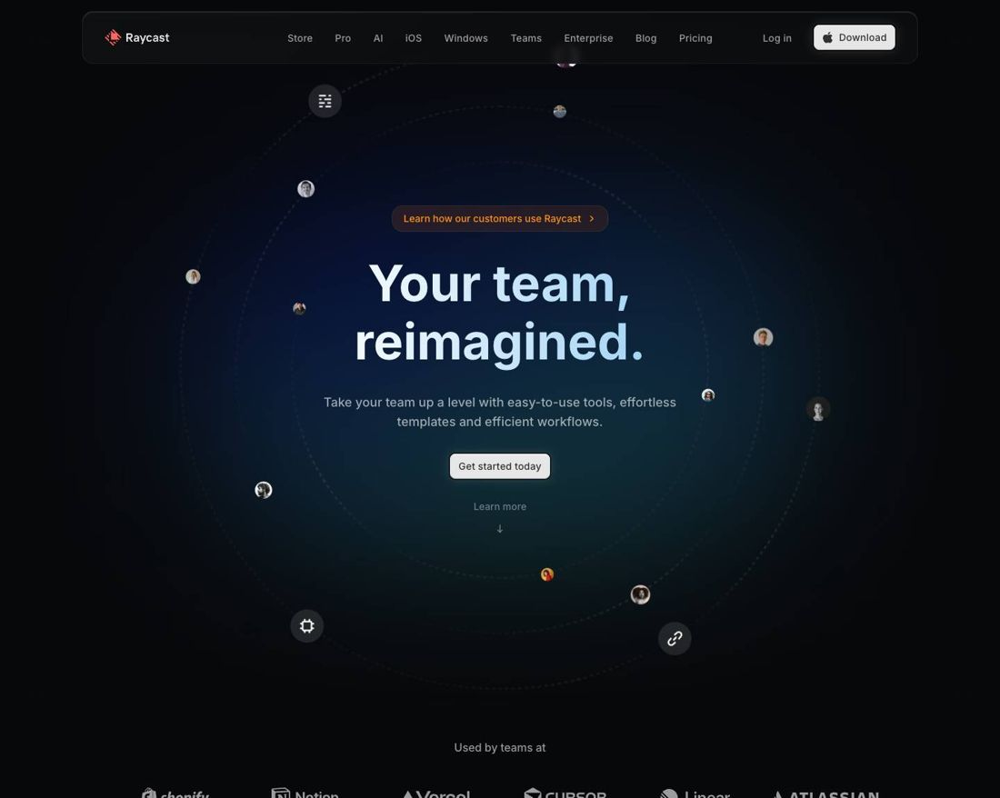
Raycast Teams のFV Raycast：暗い地の中央に大きな見出し、周りに光の点が散って奥行きを作る。電球の黄色で光らせ 、そこから点線の波紋を出す。日本語の見出しと副題は本番のまま。点描の世界地図 を地に敷き、東京からジャカルタへ光が走って、着いた所に波紋が立つ。
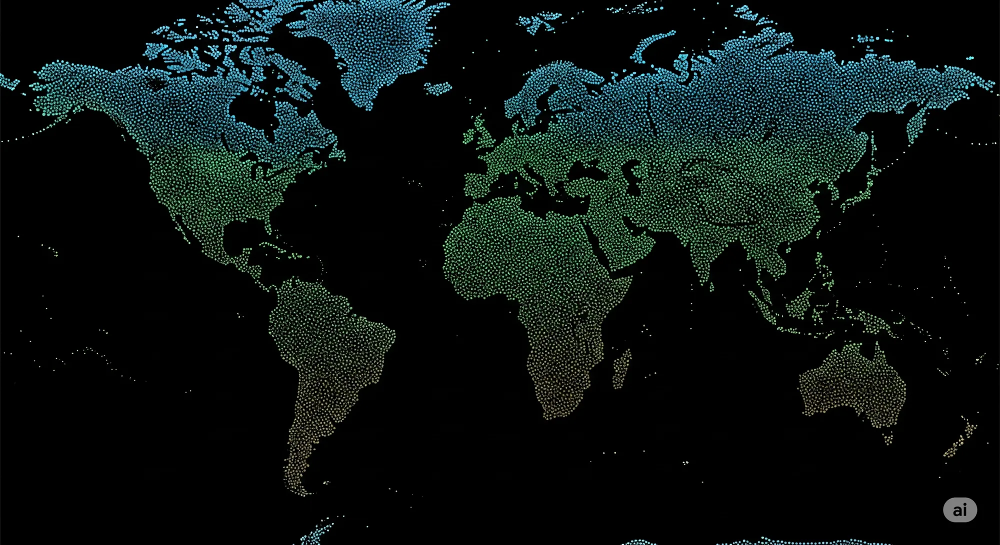
TYO · JST JKT · WIB samurai-style/service/indonesia-offshore
Tokyo / Jakarta.
品質は 日本、 開発は インドネシア 多言語対応可能な 日本の メンバーが 要件定義から 進行管理までを 担当し、 言語や 文化の ギャップを 最小限に 抑えながら、 高品質か つスピード感の ある 開発を、 優れた コストパフォーマンスで ご提供します。
scroll ↓
2 生成りの地。左に見出し、右に「止まった映像」の実写1枚参考：basement.studio Services の見出し ／ AREA 17 の名前＋写真
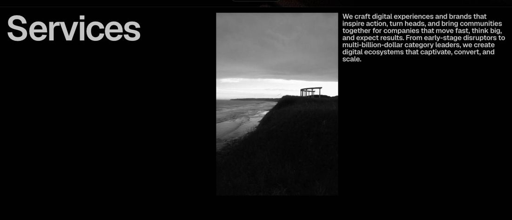
basement.studio Services の見出し AREA 17 の名前＋写真 basement：大きな「Services」の横に縦長の白黒写真と短い文。AREA 17：左に文字、右に写真1枚。写真の中の1か所だけが動く 。生成してほしい写真 ：熱帯の浜辺の青い時間を、波打ち際の低い位置から撮った写真。海の中から1本の太い海底ケーブルが砂浜に上がり、浜の奥にある窓のない小さなコンクリートの建物へ入っていく。建物の扉の上に小さなランプが1つ（消えている）。浜には人がいない。ヤシの木が1本だけ画面の端にかかり、遠くの水平線に小さな船の灯りが1つ。空は深い紺から水平線だけ淡く明るい。欧米のアート写真、寒色、35mmフィルムの粒子、静かで余白の多い構図、文字やロゴは入れない、横長 3:2。
samurai-style/service/indonesia-offshore
品質は 日本、 開発は インドネシア 多言語対応可能な 日本の メンバーが 要件定義から 進行管理までを 担当し、 言語や 文化の ギャップを 最小限に 抑えながら、 高品質か つスピード感の ある 開発を、 優れた コストパフォーマンスで ご提供します。
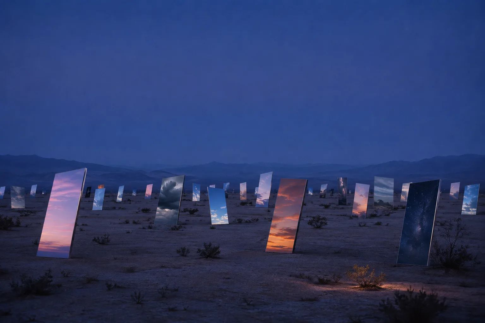
3 写真なし。副題を特大で組み、要の語が残像からピントを結ぶ参考：Rejouice Services のFV ／ ustwo の都市名の帯
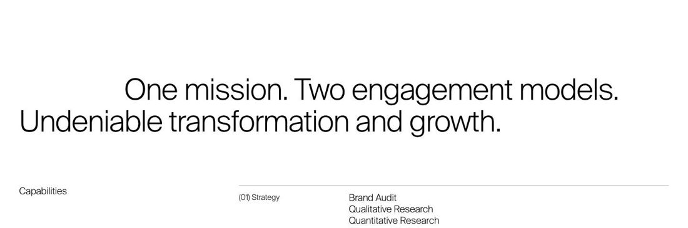
Rejouice Services のFV 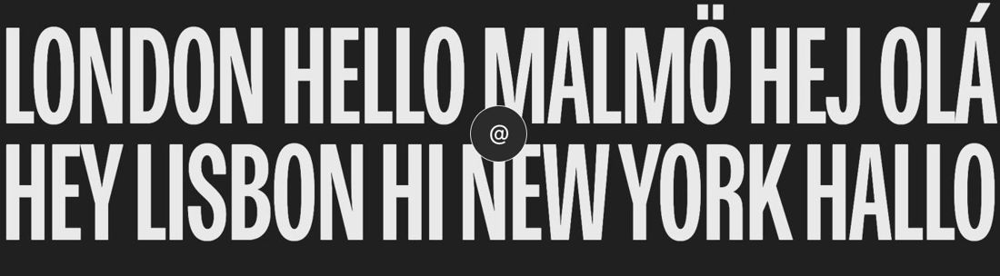
ustwo の都市名の帯 Rejouice：白地に細い大きな一文だけ。ustwo：都市名を特大で並べる。
品質は 日本、 開発は インドネシア 4 Terminal：コマンドを打つとページの見出しが出力される参考：Warp のFV ／ Vercel Enterprise のデプロイ記録
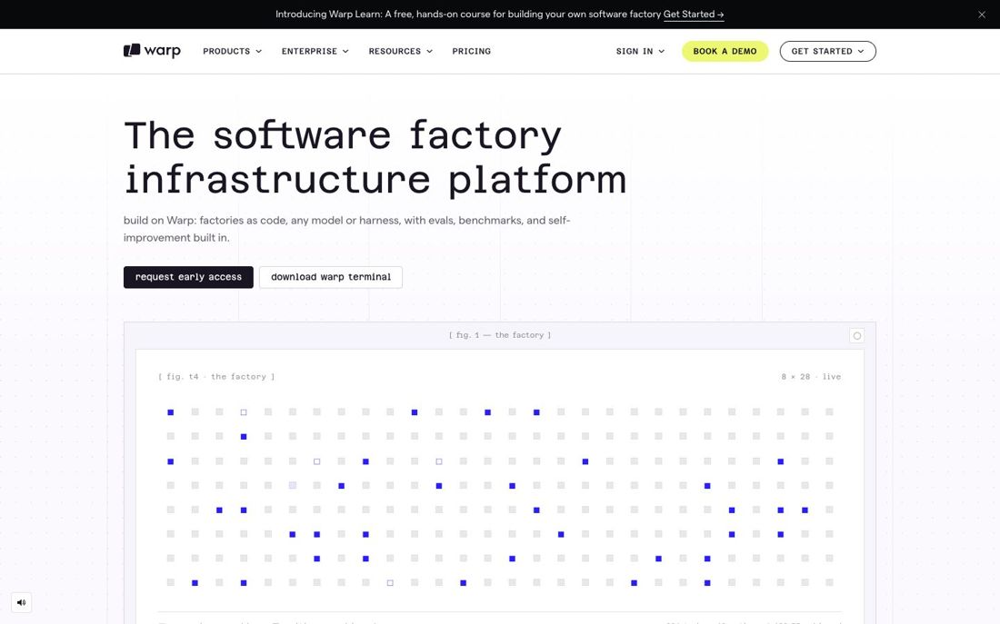
Warp のFV 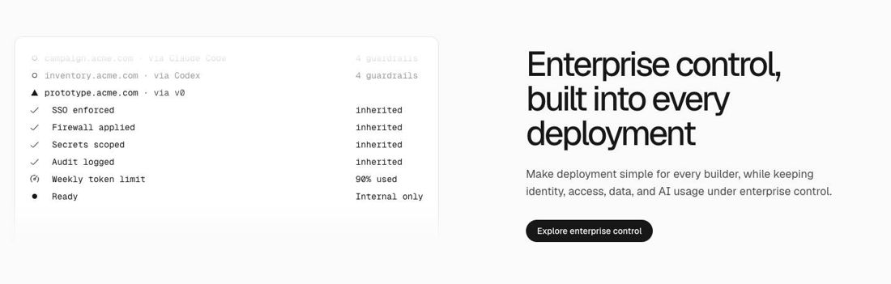
Vercel Enterprise のデプロイ記録 Warp：等幅の見出し＋図のマス目。Vercel：コマンドと結果の行。cd → cat README.md と1行ずつ出て、本番の見出しと副題が「出力」として大きく出る。最後の行は黄色のカーソルが点滅。
zsh — samurai-style
~/samurai-style $ cd service/indonesia-offshore~/samurai-style/service/indonesia-offshore $ ssh jakarta# connected — latency 2h (JST−2) 品質は 日本、 開発は インドネシア 多言語対応可能な 日本の メンバーが 要件定義から 進行管理までを 担当し、 言語や 文化の ギャップを 最小限に 抑えながら、 高品質か つスピード感の ある 開発を、 優れた コストパフォーマンスで ご提供します。
[ok] Tokyo ⇄ Jakarta samurai-style/service/indonesia-offshore
02 特徴 共通部品：/marketing-support・/newbusiness-pmo・/indonesia-offshore で同じ作り（見出し・図・写真だけ出し分け）
1 生成りの地に3行。画面の真ん中に来た行だけ灰→黒に点く参考：AREA 17 Capabilities の原則の行 ／ Cuberto Services「Benefits」
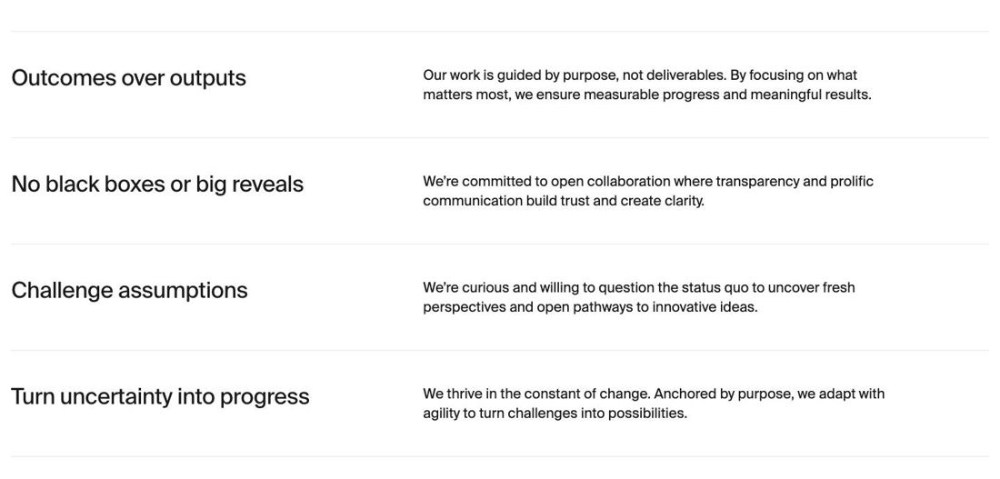
AREA 17 Capabilities の原則の行 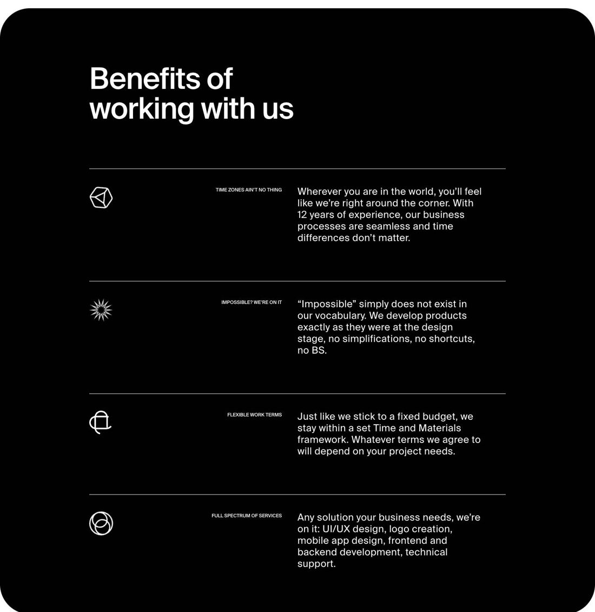
Cuberto Services「Benefits」 AREA 17：細い線で区切った行に、左に見出し・右に説明。Cuberto：番号つきの行。読んでいる行だけ黒くなり（シグナル）、ほかは灰色（ノイズ） 。見出しの頭に黄色の点が脈打つ。番号は本番の「1.」をそのまま大きく。
1. コミュニケーション 日英バイリンガルと、 英語・ インドネシア語バイリンガルの メンバーが 複数在籍。 クライアント様との コミュニケーションは すべて 日本語で 対応しながら、 インドネシアメンバーにも スムーズに 連携します。
2. 事業理解 お客様の 事業の 理解度、 顧客への 解像度に より、 開発に おける 機能要件定義など アウトプットは 大きく ことなると 考えており、 開発目的の 理解を 前提とした 提案・ 実装を 行います。
3. 誠実・ 実直 ミッションに 掲げている 「パイの 最大化」に おける 「利他と 利己は 中長期で 一致していく」との 思想に 基づき、 お客様の 事業を 自分事と して 捉え、 拡大に 貢献できるよう 尽力します。
2 紺の地に3枚のカード。カードごとに動く線の図（トップの FEATURES と同じ作り）参考：Supabase の図入りカード ／ Raycast Teams の3枚のカード
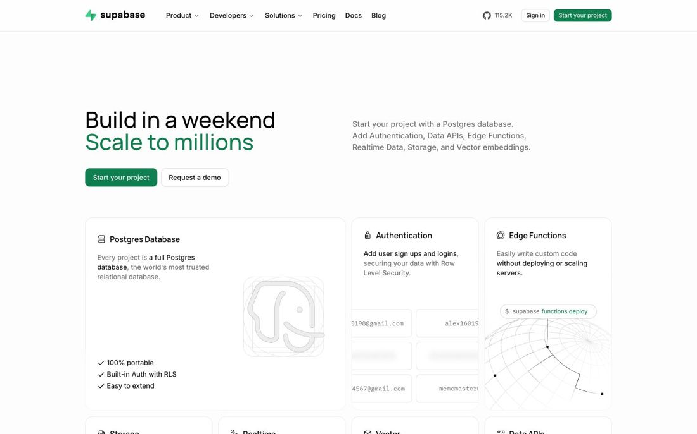
Supabase の図入りカード 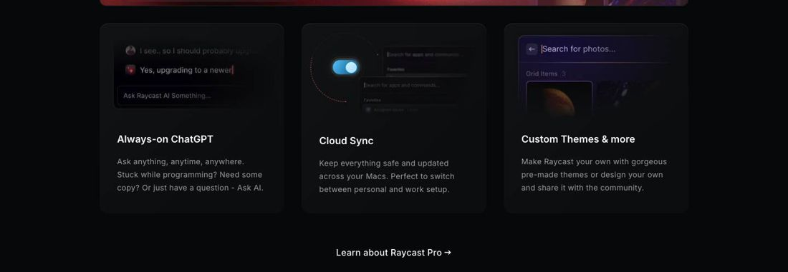
Raycast Teams の3枚のカード Supabase：カードごとに小さな線の図。Raycast：暗い地に3枚。
JA EN ID CLIENT ← JA · TEAM ← EN / ID 1.
コミュニケーション 日英バイリンガルと、 英語・ インドネシア語バイリンガルの メンバーが 複数在籍。 クライアント様との コミュニケーションは すべて 日本語で 対応しながら、 インドネシアメンバーにも スムーズに 連携します。
PURPOSE BUSINESS / CUSTOMER 2.
事業理解 お客様の 事業の 理解度、 顧客への 解像度に より、 開発に おける 機能要件定義など アウトプットは 大きく ことなると 考えており、 開発目的の 理解を 前提とした 提案・ 実装を 行います。
PLUS-SUM CLIENT US
3.
誠実・ 実直 ミッションに 掲げている 「パイの 最大化」に おける 「利他と 利己は 中長期で 一致していく」との 思想に 基づき、 お客様の 事業を 自分事と して 捉え、 拡大に 貢献できるよう 尽力します。
3 左に特大の番号が貼り付き、読み進めると 1.→2.→3. と入れ替わる参考：Rejouice Services「Classic」
Rejouice Services「Classic」 Rejouice：画面いっぱいの「Classic」の下に、短い文と表。今の番号だけ黒く塗られて 差し替わる。スマホは番号を各項目の頭に置く。
1. コミュニケーション 日英バイリンガルと、 英語・ インドネシア語バイリンガルの メンバーが 複数在籍。 クライアント様との コミュニケーションは すべて 日本語で 対応しながら、 インドネシアメンバーにも スムーズに 連携します。
2. 事業理解 お客様の 事業の 理解度、 顧客への 解像度に より、 開発に おける 機能要件定義など アウトプットは 大きく ことなると 考えており、 開発目的の 理解を 前提とした 提案・ 実装を 行います。
3. 誠実・ 実直 ミッションに 掲げている 「パイの 最大化」に おける 「利他と 利己は 中長期で 一致していく」との 思想に 基づき、 お客様の 事業を 自分事と して 捉え、 拡大に 貢献できるよう 尽力します。
03 業務フロー（7工程） 導入プロセスと同じ部品を7工程に広げたもの
1 1本の線を光が走り、節目の点が順に灯る参考：thoughtbot Product Design の3列
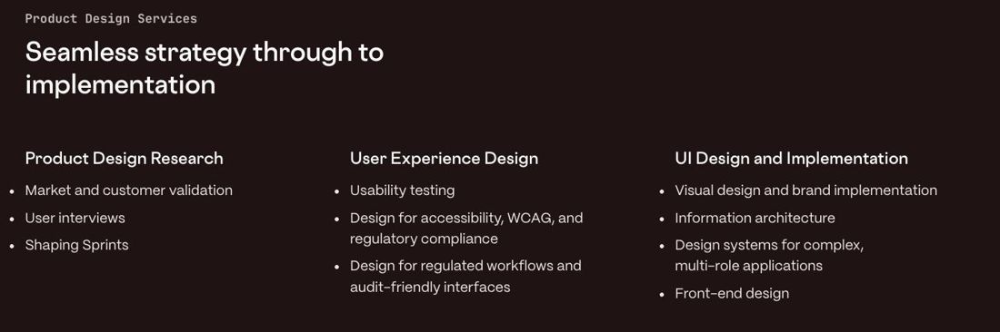
thoughtbot Product Design の3列 thoughtbot：3列に見出しと短い文。節目の点が順に黄色く灯る 。その後は黄色い光が線の上を走り続ける。スマホは縦の線。
ツールの 開発目的（ユーザーの 目的・課題と ツールの 提供価値）の ヒアリングに 基づき、 必要機能と 開発要件の 整理を 行った 上で、 デザインレビューから リリースまで 適宜進捗報告しながら 進行いたします。
01
要件ヒヤリング 02
要件定義 03
デザイン制作 04
開発・実装 05
テスト 06
リリース 07
ブラッシュアップ 最短1か 月30万円～で 対応いたしますので、 まずは お気軽に ご相談ください
2 Terminal：工程が実行ログとして1行ずつ流れ、最後に100%参考：Vercel Enterprise のデプロイ記録 ／ Cursor のFV
Vercel Enterprise のデプロイ記録 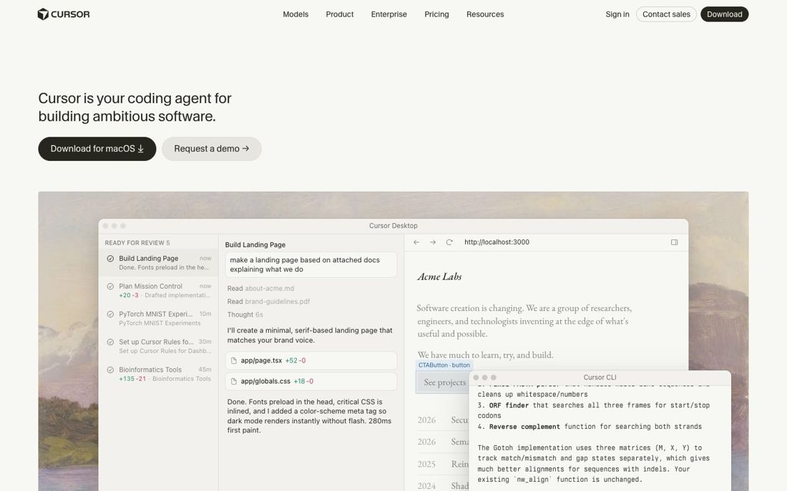
Cursor のFV Vercel：処理の記録を等幅で並べる。Cursor：写真の上に作業の窓。[01] の番号と工程名が流れ、右に ✓ done。説明文は日本語の普通の書体で下に。最後に進み具合の帯。
flow.log
~/samurai-style/service/indonesia-offshore $ samurai run --flowツールの 開発目的（ユーザーの 目的・課題と ツールの 提供価値）の ヒアリングに 基づき、 必要機能と 開発要件の 整理を 行った 上で、 デザインレビューから リリースまで 適宜進捗報告しながら 進行いたします。 最短1か 月30万円～で 対応いたしますので、 まずは お気軽に ご相談ください 3 左に見出しを貼り付け、右に特大の番号の行を積む参考：ustwo Services の提供内容の行 ／ Cuberto「Our solutions」
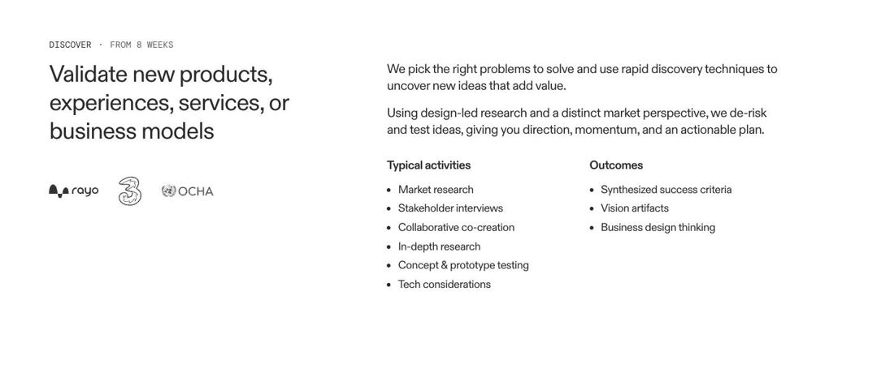
ustwo Services の提供内容の行 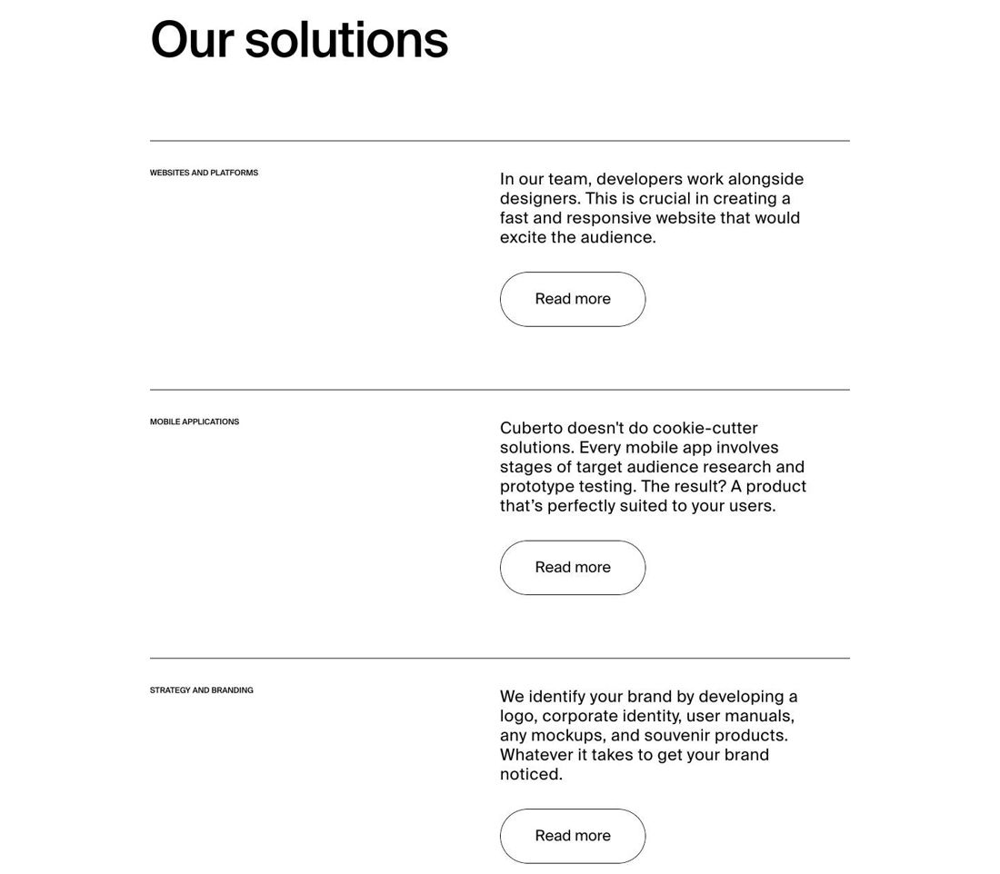
Cuberto「Our solutions」 ustwo：左に見出し、右に説明と箇条。Cuberto：線で区切った行。
ツールの 開発目的（ユーザーの 目的・課題と ツールの 提供価値）の ヒアリングに 基づき、 必要機能と 開発要件の 整理を 行った 上で、 デザインレビューから リリースまで 適宜進捗報告しながら 進行いたします。
01
要件ヒヤリング 02
要件定義 03
デザイン制作 04
開発・実装 05
テスト 06
リリース 07
ブラッシュアップ 最短1か 月30万円～で 対応いたしますので、 まずは お気軽に ご相談ください
04 対応可能な技術スタック 共通部品：/newbusiness-pmo・/indonesia-offshore で同じ作り（本番の文も同じ）
1 生成りの能力表。左に分類、右にアイコンと名前を3列参考：Rejouice Services「Capabilities」
Rejouice Services「Capabilities」 Rejouice：左に「(01) Strategy」、右に項目を縦に並べた表。
フロントエンド Next.js Vite SASS バックエンド Node.js Python インフラ MySQL PostgreSQL Solana Docker 2 Terminal：stack.json を開くと中身が並ぶ参考：Vercel Enterprise のデプロイ記録
Vercel Enterprise のデプロイ記録
Vercel：等幅の設定ファイル風の記録。$ cat stack.json の出力として、分類をキー、技術をアイコンつきの札で並べる。記号（引用符・括弧）は飾りで、本番の文には足さない。
3 紺の地に3本の帯。分類ごとに逆向きに流れる参考：AREA 17 Capabilities の事例の帯
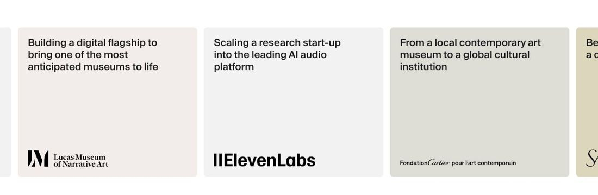
AREA 17 Capabilities の事例の帯 AREA 17：事例のカードが横に流れる帯。
フロントエンド Next.js Vite SASS Next.js Vite SASS バックエンド Node.js Python Node.js Python インフラ MySQL PostgreSQL Solana Docker MySQL PostgreSQL Solana Docker 05 開発事例 共通部品：/newbusiness-pmo・/indonesia-offshore で同じ作り（本番の文も同じ）
1 生成りの表。分類と題名の帯の下に、画像・説明・使用技術参考：Rejouice Services「Venture」の表
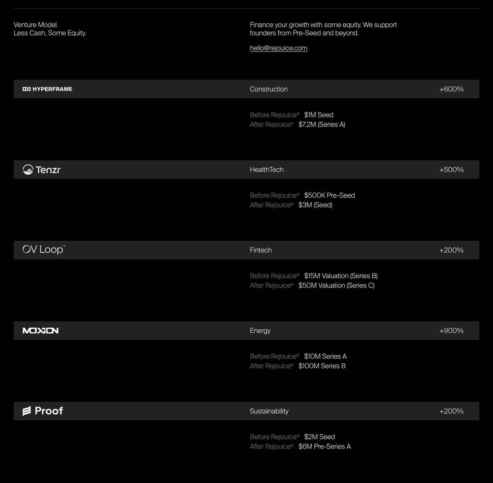
Rejouice Services「Venture」の表 Rejouice：ロゴと業種の灰色の帯の下に、前後の数字を並べた表。
webツール / SaaS
獲得型動画 広告を LPから 5分で 制作 売れる 動画 広告を LPから 5分で 制作。 検証から 成果改善まで、 動画 広告の PDCAに 必要な 機能を 1ツールで 網羅します
使用技術:
webツール / SaaS
LINEミニアプリ 企業・ 店舗が LINE上で 提供できる ウェブアプリケーション
使用技術:
2 紺の地に2枚。画像を端末の枠にはめて見せる参考：Monterail の事例の行 ／ thoughtbot の事例カード
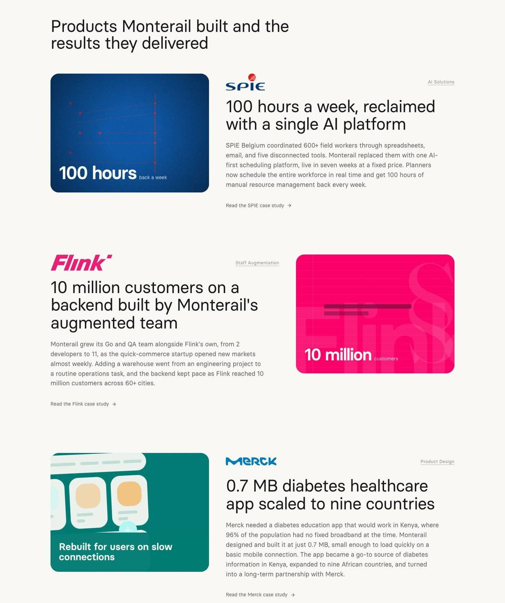
Monterail の事例の行 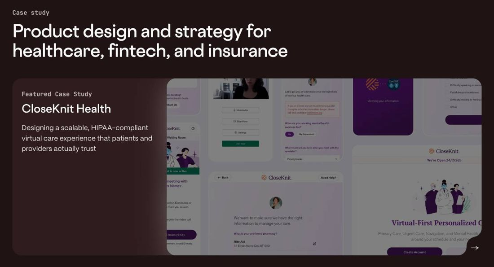
thoughtbot の事例カード Monterail：事例ごとに画像と題名・説明。thoughtbot：暗い地の事例カード。
webツール / SaaS 獲得型動画 広告を LPから 5分で 制作 売れる 動画 広告を LPから 5分で 制作。 検証から 成果改善まで、 動画 広告の PDCAに 必要な 機能を 1ツールで 網羅します
使用技術:
webツール / SaaS LINEミニアプリ 企業・ 店舗が LINE上で 提供できる ウェブアプリケーション
使用技術:
3 Terminal：事例を README として開く参考：Vercel Enterprise のデプロイ記録
Vercel Enterprise のデプロイ記録
Vercel：等幅の記録。cat cases/01-hookhack.md の出力として、分類・題名・説明・使用技術。右に画像の縮小。
cases/01-hookhack.md
~/samurai-style/service/indonesia-offshore $ cat cases/01-hookhack.mdwebツール / SaaS 獲得型動画 広告を LPから 5分で 制作 売れる 動画 広告を LPから 5分で 制作。 検証から 成果改善まで、 動画 広告の PDCAに 必要な 機能を 1ツールで 網羅します
使用技術:
cases/02-line-mini-app.md
~/samurai-style/service/indonesia-offshore $ cat cases/02-line-mini-app.mdwebツール / SaaS LINEミニアプリ 企業・ 店舗が LINE上で 提供できる ウェブアプリケーション
使用技術:
06 メンバー 共通部品：/marketing-support・/newbusiness-pmo・/indonesia-offshore で同じ作り（見出し・図・写真だけ出し分け）（marketing は2人・見出しなし）
1 生成りのカード（トップの MEMBER と同じ）。白黒→ホバーで色参考：AREA 17 Culture の顔写真の格子
AREA 17 Culture の顔写真の格子 AREA 17：同じ大きさの顔写真を格子に並べ、下に名前と肩書き。
日本メンバー
橋本 圭司 - 代表取締役
大手通信会社の 営業、 事業企画、 および Webコンサル会社での 経験を 生かし、 様々な 業種・規模の 企業で BizDev・ マーケティングの コンサルと して 事業を 推進。 アートスタートアップCMOを 経て 現職。
上水流 弘一 - プロジェクトマネージャー
福岡在住。 Web開発会社の 経営と 並行して、 現役の フルスタックエンジニアと しても 活動。 小規模から 中規模まで、 事業フェーズに 応じた 柔軟な システム設計を 得意と する。 技術と 対話を 通じて 事業の 課題解決に 取り 組んでいる。
林 壮 - プロジェクトマネージャー
東京生まれ、 イギリス・ シンガポール育ち。 映像ディレクターの 経験を 持ち、 現在は 弊社の オフショア開発事業と 動画制作事業に 加え、 採用担当も 務める。
オフショア開発メンバー
Satrio Buwono - エンジニア統括
主な 開発領域： ・UI/UXデザイン ・インタラクション実装 ・SPA開発 ・ データベース設計と 管理
使用言語： JavaScript, TypeScript, Solana, Docker
Ahmad Maulana Hafiz - フルスタックエンジニア
主な 開発領域： ・UI/UXデザイン ・インタラクション実装 ・SPA開発
使用言語： HTML, CSS & SASS, JavaScript, TypeScript
2 紺の地。左に名簿、右のモニターに今の人だけ映る参考：basement.studio「The Crew」
basement.studio「The Crew」 basement：左に名前と肩書きの一覧、右に白黒の顔写真。
日本メンバー
01 橋本 圭司 - 代表取締役
大手通信会社の 営業、 事業企画、 および Webコンサル会社での 経験を 生かし、 様々な 業種・規模の 企業で BizDev・ マーケティングの コンサルと して 事業を 推進。 アートスタートアップCMOを 経て 現職。
02 上水流 弘一 - プロジェクトマネージャー
福岡在住。 Web開発会社の 経営と 並行して、 現役の フルスタックエンジニアと しても 活動。 小規模から 中規模まで、 事業フェーズに 応じた 柔軟な システム設計を 得意と する。 技術と 対話を 通じて 事業の 課題解決に 取り 組んでいる。
03 林 壮 - プロジェクトマネージャー
東京生まれ、 イギリス・ シンガポール育ち。 映像ディレクターの 経験を 持ち、 現在は 弊社の オフショア開発事業と 動画制作事業に 加え、 採用担当も 務める。
オフショア開発メンバー
04 Satrio Buwono - エンジニア統括
主な 開発領域： ・UI/UXデザイン ・インタラクション実装 ・SPA開発 ・ データベース設計と 管理
使用言語： JavaScript, TypeScript, Solana, Docker
05 Ahmad Maulana Hafiz - フルスタックエンジニア
主な 開発領域： ・UI/UXデザイン ・インタラクション実装 ・SPA開発
使用言語： HTML, CSS & SASS, JavaScript, TypeScript
3 拠点ごとに分け、上に現地の時刻（日本 JST／インドネシア WIB）参考：BUCK About の拠点と時計 ／ STX Next の拠点一覧
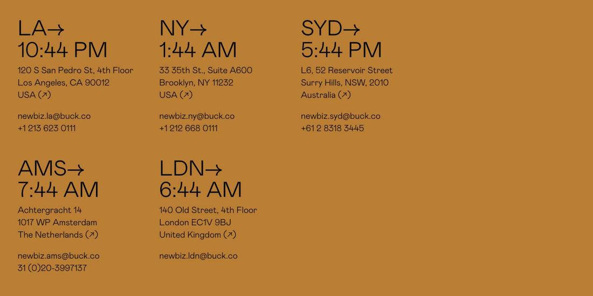
BUCK About の拠点と時計 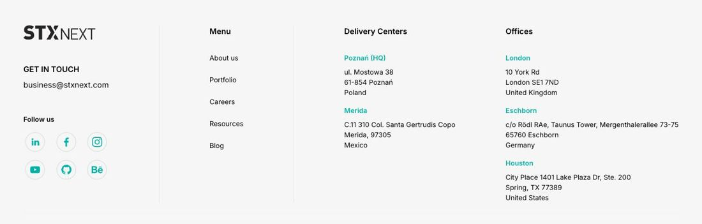
STX Next の拠点一覧 BUCK：拠点の名前と現地の時刻を大きく並べる。STX Next：拠点ごとの一覧。
--:--
日本メンバー
橋本 圭司 - 代表取締役
大手通信会社の 営業、 事業企画、 および Webコンサル会社での 経験を 生かし、 様々な 業種・規模の 企業で BizDev・ マーケティングの コンサルと して 事業を 推進。 アートスタートアップCMOを 経て 現職。
上水流 弘一 - プロジェクトマネージャー
福岡在住。 Web開発会社の 経営と 並行して、 現役の フルスタックエンジニアと しても 活動。 小規模から 中規模まで、 事業フェーズに 応じた 柔軟な システム設計を 得意と する。 技術と 対話を 通じて 事業の 課題解決に 取り 組んでいる。
林 壮 - プロジェクトマネージャー
東京生まれ、 イギリス・ シンガポール育ち。 映像ディレクターの 経験を 持ち、 現在は 弊社の オフショア開発事業と 動画制作事業に 加え、 採用担当も 務める。
--:--
オフショア開発メンバー
Satrio Buwono - エンジニア統括
主な 開発領域： ・UI/UXデザイン ・インタラクション実装 ・SPA開発 ・ データベース設計と 管理
使用言語： JavaScript, TypeScript, Solana, Docker
Ahmad Maulana Hafiz - フルスタックエンジニア
主な 開発領域： ・UI/UXデザイン ・インタラクション実装 ・SPA開発
使用言語： HTML, CSS & SASS, JavaScript, TypeScript


 React.jsNext.jsVite
React.jsNext.jsVite HTML
HTML CSSSASS
CSSSASS JavaScript
JavaScript TypeScriptNode.js
TypeScriptNode.js Express.jsPython
Express.jsPython FastAPI
FastAPI PrismaSolanaDocker
PrismaSolanaDocker